Aminácidos, peptídeos e proteínas
27/11/2026
3 | Aminoácidos, Peptídeos e Proteínas
© 2017 W. H. Freeman and Company

CAPÍTULO 3
Aminoácidos, Peptídeos
e Proteínas
Objetivos de aprendizagem:
- Estrutura e nomenclatura de aminoácidos
- Estrutura e propriedades de peptídeos
- Comportamento de ionização de aminoácidos e peptídeos
- Métodos para caracterizar peptídeos e proteínas
Proteínas:
Principais Agentes da Função Biológica
- Catálise
- enolase (na via glicolítica)
- DNA polimerase (na replicação do DNA)
- Transporte
- hemoglobina (transporta O2 no sangue)
- lactose permease (transporta lactose através da membrana celular)
- Estrutura
- colágeno (tecido conjuntivo)
- queratina (cabelos, unhas, penas, chifres)
- Movimento
- miosina (tecido muscular)
- actina (tecido muscular, motilidade celular)
As Proteínas Desempenham uma Ampla Gama de
Funções Biológicas
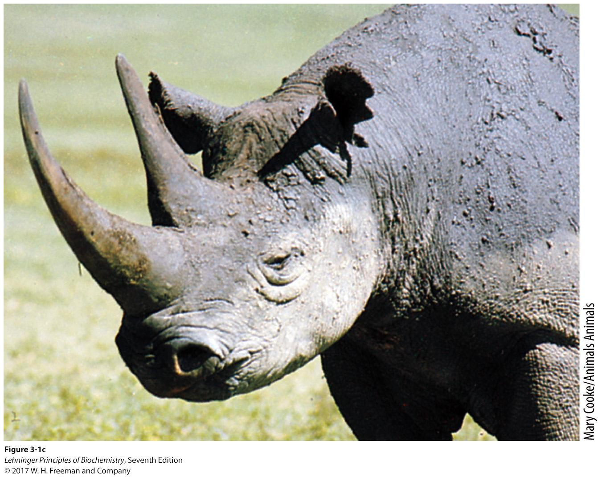
Aminoácidos:
Blocos Construtores das Proteínas
- Proteínas são heteropolímeros lineares de α-aminoácidos.
- Os aminoácidos têm propriedades bem adequadas para realizar uma variedade de funções biológicas:
- capacidade de polimerizar
- propriedades ácido-base úteis
- propriedades físicas variadas
- funcionalidade química variada
Aminoácidos Compartilham Muitas Características, Diferindo Apenas no Substituinte R
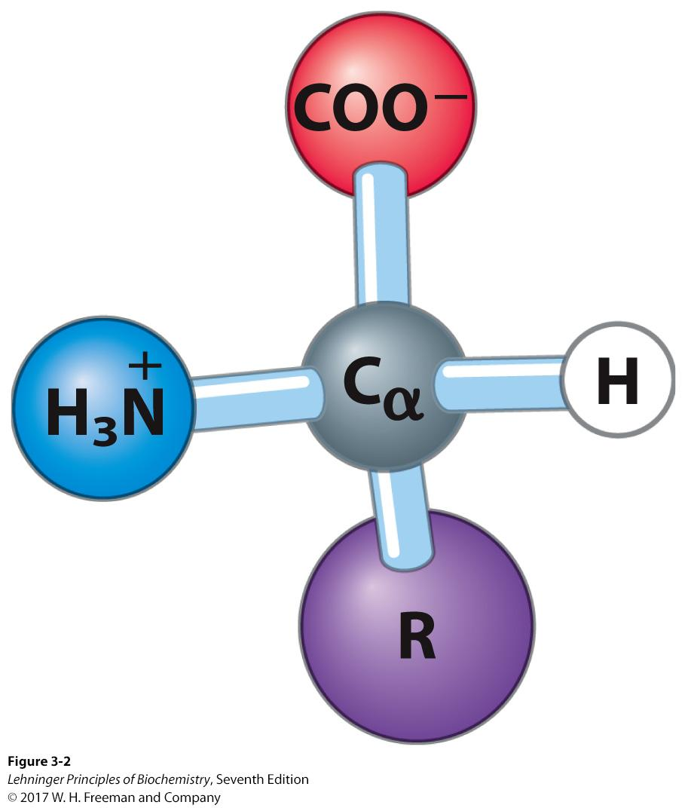
Aminoácidos Têm Três Grupos Funcionais Comuns Ligados ao Carbono α
- O carbono α sempre tem quatro substituintes e é tetraédrico.
- Todos (exceto a prolina) têm:
- um grupo carboxila ácido ligado ao carbono α
- um grupo amino básico ligado ao carbono α
- um hidrogênio α ligado ao carbono α
- O quarto substituinte (R) é único na glicina, o aminoácido mais simples. O quarto substituinte também é hidrogênio.
Todos os Aminoácidos São Quirais (Exceto a Glicina)
As proteínas contêm apenas L-aminoácidos
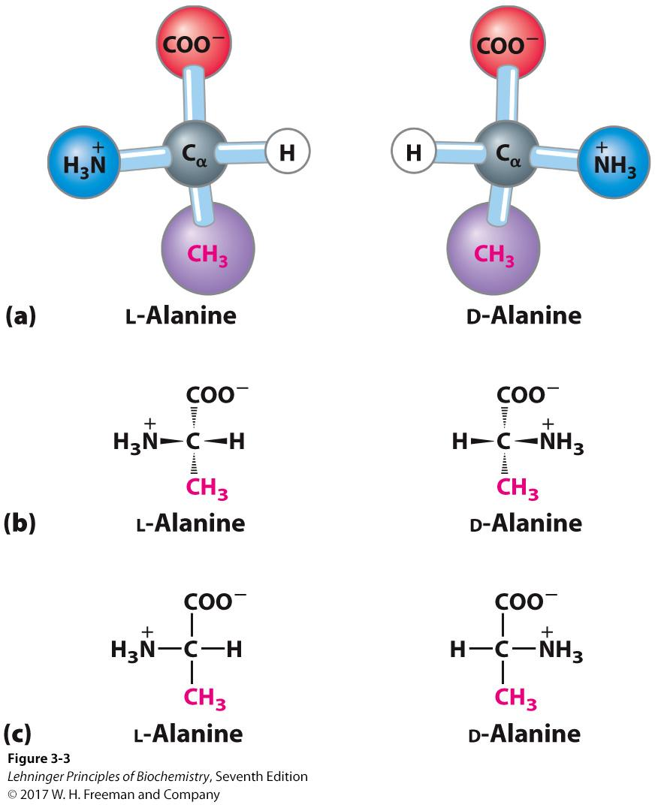
Aminoácidos: Classificação
Os aminoácidos comuns podem ser colocados em cinco grupos básicos dependendo de seus substituintes R:
- apolares, alifáticos (7)
- aromáticos (3)
- polares, não carregados (5)
- carregados positivamente (3)
- carregados negativamente (2)
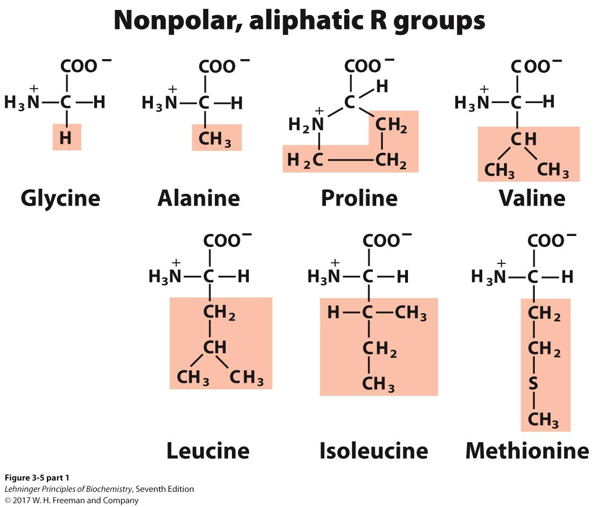

Estas cadeias laterais de aminoácidos absorvem luz UV em 270–280 nm

Estas cadeias laterais de aminoácidos podem formar ligações de hidrogênio.
A cisteína pode formar ligações dissulfeto.
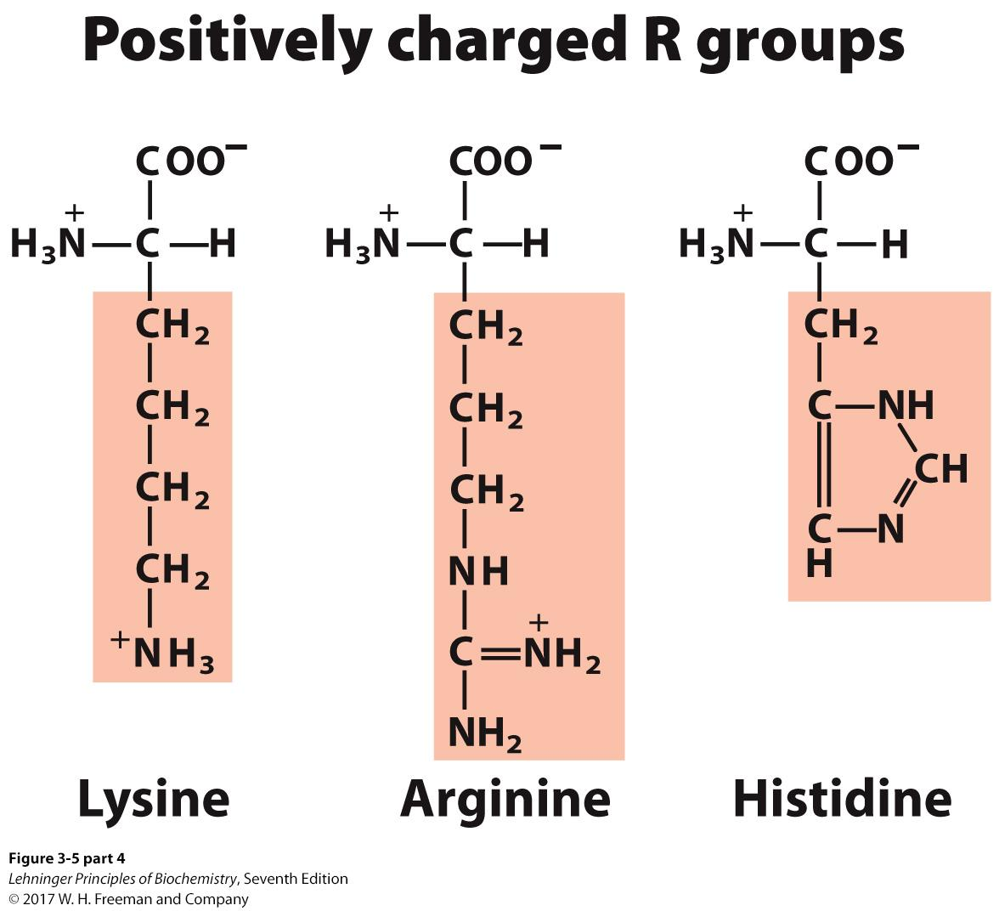
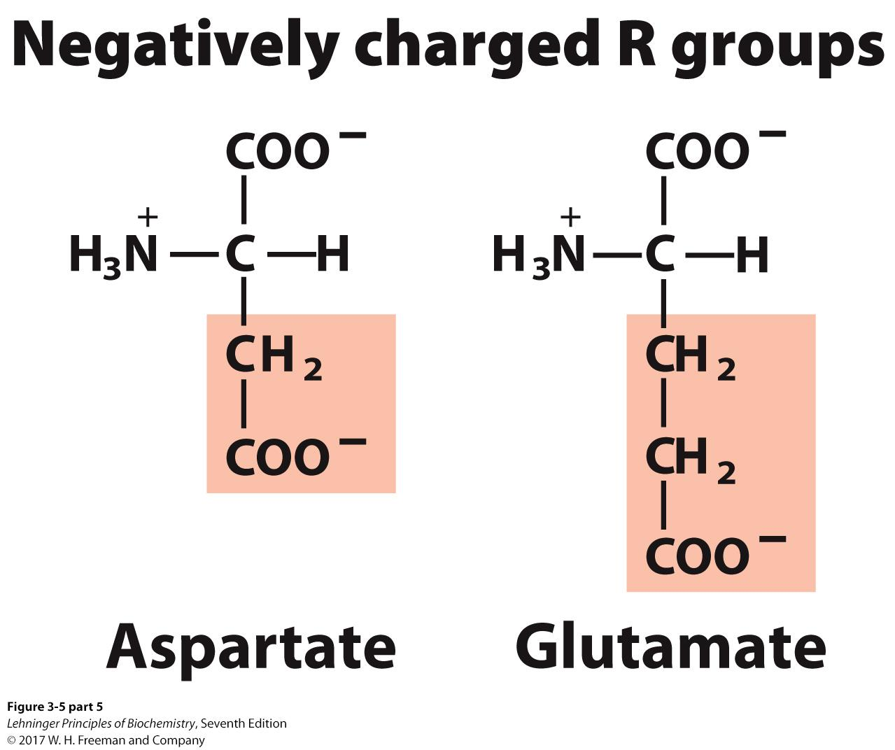
Ionização de Aminoácidos
- Aminoácidos contêm pelo menos dois prótons ionizáveis, cada um com seu próprio pKa.
- O ácido carboxílico tem um pKa ácido e estará protonado em pH ácido (baixo):
−COOH ↔︎ COO− + H+
- O grupo amino tem um pKa básico e estará protonado até que se atinja um pH básico (alto):
−NH4+ ↔︎ NH3 + H+
O Ambiente Químico Afeta os Valores de pKa
O grupo α-carboxila é muito mais ácido do que nos ácidos carboxílicos.
O grupo α-amino é ligeiramente menos básico do que nas aminas.
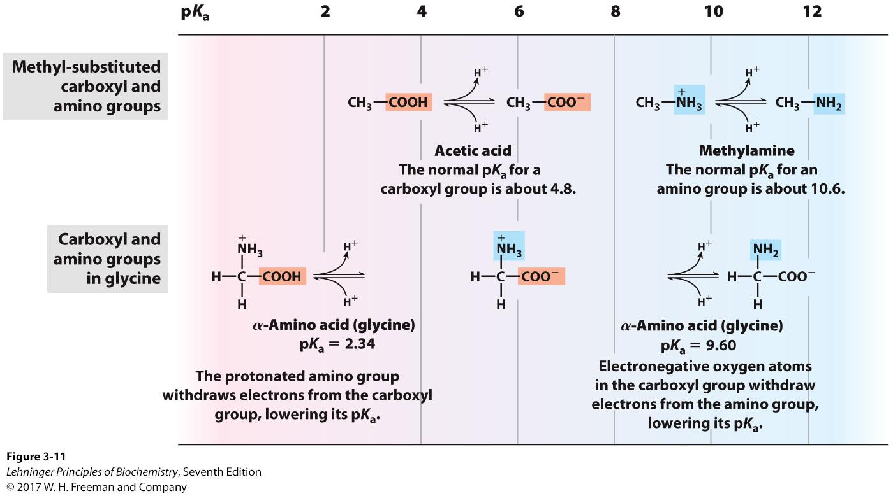
Ionização de Aminoácidos
- Em pH baixo, o aminoácido existe em uma forma carregada positivamente (cátion).
- Em pH alto, o aminoácido existe em uma forma carregada negativamente (ânion).
- Entre o pKa de cada grupo, o aminoácido existe em uma forma zwitteriônica, na qual uma única molécula possui carga positiva e negativa.
Cátion → Zwitterion → Ânion

Aminoácidos Carregam uma Carga Líquida Zero
em um pH Específico (o pI)
- Zwitterions predominam em valores de pH entre os valores de pKa dos grupos amino e carboxila.
- Para aminoácidos sem cadeias laterais ionizáveis, o Ponto Isoelétrico (ponto de equivalência, pI) é:
\[pI = \frac{pK_1 + pK_2}{2}\]
- Neste ponto, a carga líquida é zero.
- O AA é menos solúvel em água.
- O AA não migra em campo elétrico.
Aminoácidos Podem Atuar como Tampões
Aminoácidos com cadeias laterais não carregadas, como a glicina, têm dois valores de pKa:
- O pKa do grupo α-carboxila é 2,34.
- O pKa do grupo α-amino é 9,6.
Como os tampões evitam alterações no pH próximas ao pKa, a glicina pode atuar como tampão em duas faixas de pH.
Regiões
Tamponantes
Cadeias Laterais Ionizáveis Também Têm pKa e Atuam como Tampões
- Cadeias laterais ionizáveis influenciam o pI do aminoácido.
- Cadeias laterais ionizáveis também podem ser tituladas.
- As curvas de titulação agora são mais complexas, pois cada pKa possui uma zona tamponante de 2 unidades de pH.

Como Calcular o pI Quando a Cadeia Lateral É Ionizável
- Identifique a espécie que carrega carga líquida zero.
- Identifique o valor de pKa que define a força ácida deste zwitterion: (pKR).
- Identifique o valor de pKa que define a força básica deste zwitterion: (pK2).
- Calcule a média desses dois valores de pKa.
Qual é o pI da histidina?
Aminoácidos Polimerizam para Formar Peptídeos
- Peptídeos são pequenos produtos de condensação de aminoácidos.
- Eles são “pequenos” comparados às proteínas (MM < 10 kDa).
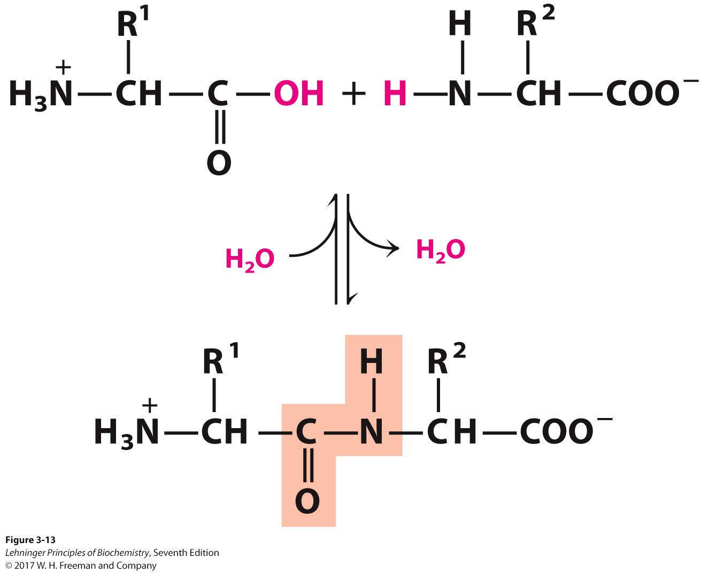
As Extremidades dos Peptídeos Não São Iguais
A numeração (e nomenclatura) começa a partir do terminal amino (N-terminal).
AA1 AA2 AA3 AA4 AA5

Nomeando Peptídeos:
Comece no N-terminal
- Usando nomes completos dos aminoácidos:
- serilgliciltirosilalanilleucina
- Usando a abreviação do código de três letras:
- Ser-Gly-Tyr-Ala-Leu
- Para peptídeos mais longos (como proteínas), pode-se usar o código de uma letra:
- SGYAL
Peptídeos: Uma Variedade de Funções
- Hormônios e feromônios
- insulina (metabolismo de açúcares)
- ocitocina (parto)
- peptídeo sexual (acasalamento de drosófilas)
- Neuropeptídeos
- substância P (mediador da dor)
- Antibióticos
- polimixina B (para bactérias Gram –)
- bacitracina (para bactérias Gram +)
- Proteção, ex.: toxinas
- amanitina (cogumelos)
- conotoxina (caramujos cônicos)
- clorotoxina (escorpiões)
Proteínas São Compostas de:
- Polipeptídeos (α-aminoácidos ligados covalentemente) + possivelmente:
- cofatores
- componente funcional não aminoácido
- íons metálicos ou moléculas orgânicas
- coenzimas
- cofatores orgânicos
- NAD+ na lactato desidrogenase
- grupos prostéticos
- cofatores ligados covalentemente
- heme na mioglobina
- outras modificações (modificações pós-traducionais)
- cofatores
Aminoácidos Incomuns em Proteínas
- Não incorporados pelos ribossomos
- exceto a selenocisteína
- Surgem por modificações pós-traducionais de proteínas
- Modificações reversíveis, especialmente fosforilação, são importantes na regulação e sinalização.
Aminoácidos Modificados Encontrados em Proteínas
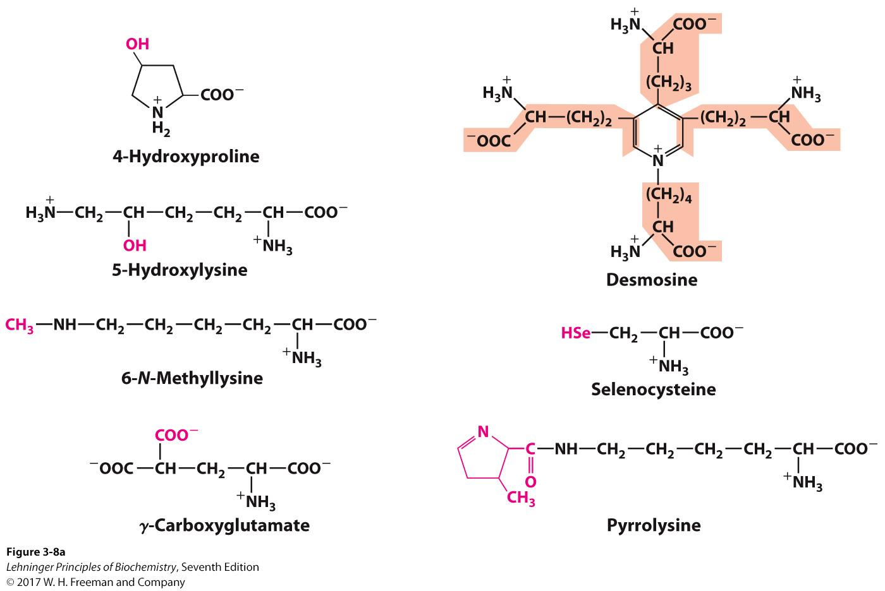
Modificações Reversíveis de Aminoácidos
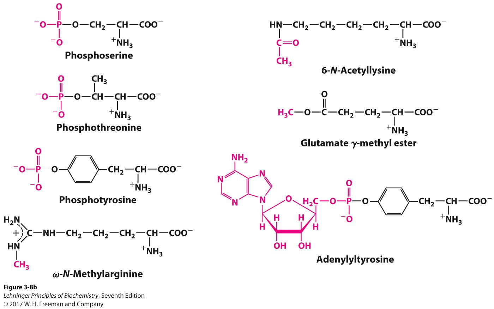
O Tamanho e o Número de Polipeptídeos
Variam Muito nas Proteínas
| Proteína | Massa molecular | Número de resíduos | Número de cadeias polipeptídicas |
|---|---|---|---|
| Citocromo c (humano) | 12.400 | 104 | 1 |
| Ribonuclease A (pâncreas bovino) | 13.700 | 124 | 1 |
| Lisozima (clara de ovo de galinha) | 14.300 | 129 | 1 |
| Mioglobina (coração equino) | 16.700 | 153 | 1 |
| Quimotripsina (pâncreas bovino) | 25.700 | 245 | 1 |
| Quimotripsinogênio (bovino) | 25.700 | 245 | 1 |
| Hemoglobina (humana) | 64.500 | 574 | 4 |
| Albumina sérica (humana) | 66.000 | 609 | 1 |
| Hexoquinase (levedura) | 107.900 | 972 | 2 |
| RNA polimerase (E. coli) | 450.000 | 4.158 | 5 |
| Apolipoproteína B (humana) | 513.000 | 4.536 | 1 |
| Glutamina sintetase (E. coli) | 619.000 | 5.628 | 12 |
| Titina (humana) | 2.993.000 | 26.926 | 1 |
Proteínas Conjugadas Estão Ligadas Covalentemente a uma Entidade Não Proteica
| Classe | Grupo prostético | Exemplo |
|---|---|---|
| Lipoproteínas | Lipídios | β1-Lipoproteína do sangue |
| Glicoproteínas | Carboidratos | Imunoglobulina G |
| Fosfoproteínas | Grupos fosfato | Caseína do leite |
| Hemoproteínas | Heme (porfirina de ferro) | Hemoglobina |
| Flavoproteínas | Nucleotídeos de flavina | Succinato desidrogenase |
| Metaloproteínas | Ferro Zinco Cálcio Molibdênio Cobre |
Ferritina Álcool desidrogenase Calmodulina Dinitrogenase Plastocianina |
Perguntas Comuns Sobre Peptídeos e Proteínas
Qual é a sua sequência e composição?
Qual é a sua estrutura tridimensional?
Como ela encontra seu enovelamento nativo?
Como ela desempenha seu papel bioquímico?
Como a sua função é regulada?
Como ela interage com outras macromoléculas?
Como ela está relacionada a outras proteínas?
Onde ela está localizada dentro da célula?
Quais são suas propriedades físico-químicas?
Estudar Proteínas e Peptídeos Às Vezes Requer Purificação a Partir de uma Mistura
- Polipeptídeos contêm sequências de aminoácidos diferentes.
- A sequência e o arranjo de aminoácidos conferem ao polipeptídeo um caráter químico (ou seja, carregado, polar, hidrofóbico, etc.).
- Alguns polipeptídeos ligam-se a alvos específicos, o que pode ser usado para “pescá-los” de uma mistura complexa.
Uma Mistura de Proteínas Pode Ser Separada
- A separação baseia-se em diferenças nas propriedades físicas e químicas:
- carga
- tamanho
- afinidade por um ligante
- solubilidade
- hidrofobicidade
- estabilidade térmica
- A cromatografia é comumente usada para separação preparativa, na qual a proteína frequentemente consegue permanecer totalmente enovelada.
Cromatografia em Coluna

- A cromatografia em coluna permite a separação de uma mistura de proteínas sobre uma fase sólida (matriz porosa) usando uma fase líquida para mobilizar as proteínas.
- Proteínas com menor afinidade pela fase sólida serão eluídas primeiro; proteínas com maior afinidade ficarão retidas na coluna por mais tempo e serão eluídas depois.
Separação por Carga: Troca Iônica
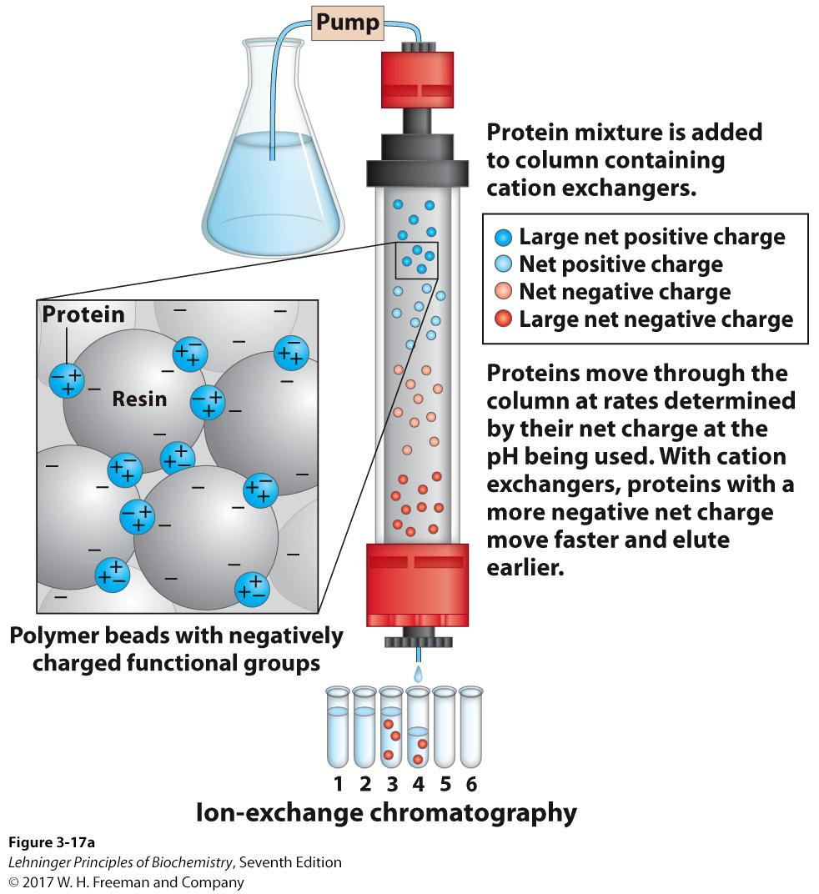
Separação por Tamanho: Exclusão por Tamanho
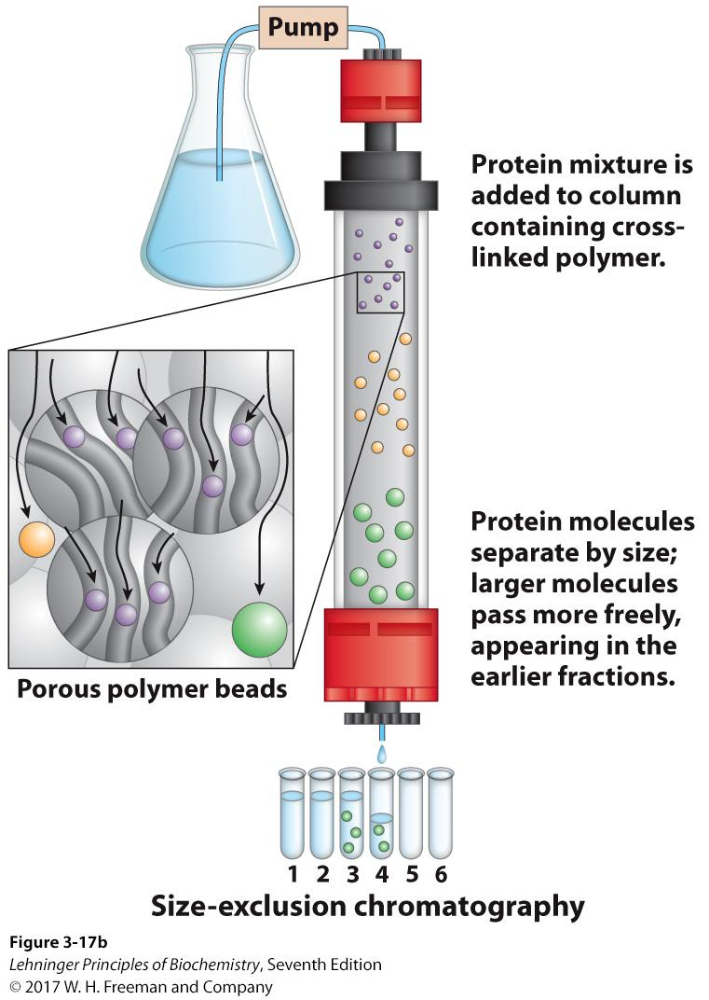
Separação por Ligação: Afinidade
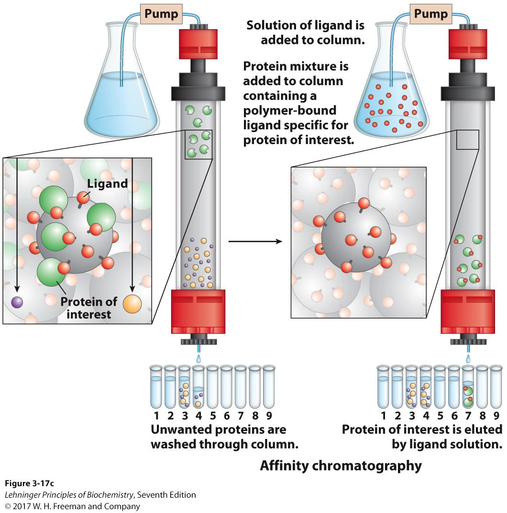
Eletroforese para Análise de Proteínas
A separação em escala analítica é comumente feita por eletroforese.
- O campo elétrico puxa as proteínas de acordo com sua carga.
- A matriz de gel dificulta a mobilidade das proteínas de acordo com seu tamanho e forma.
- O gel é comumente de poliacrilamida, então a separação de proteínas via eletroforese é frequentemente chamada de eletroforese em gel de poliacrilamida, ou PAGE.
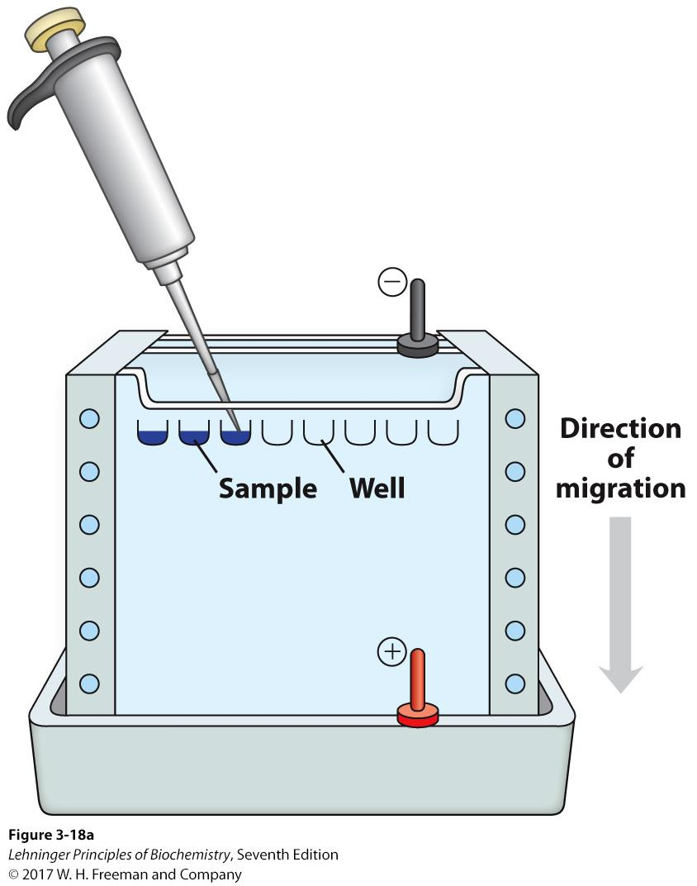
SDS-PAGE Separa Proteínas por Massa Molecular
- SDS – dodecil sulfato de sódio – um detergente

- Micelas de SDS ligam-se às proteínas e facilitam o desenovelamento.
- O SDS confere a todas as proteínas uma carga uniformemente negativa.
- A forma nativa das proteínas não importa.
- A velocidade de migração dependerá apenas do tamanho: proteínas pequenas mover-se-ão mais rápido.
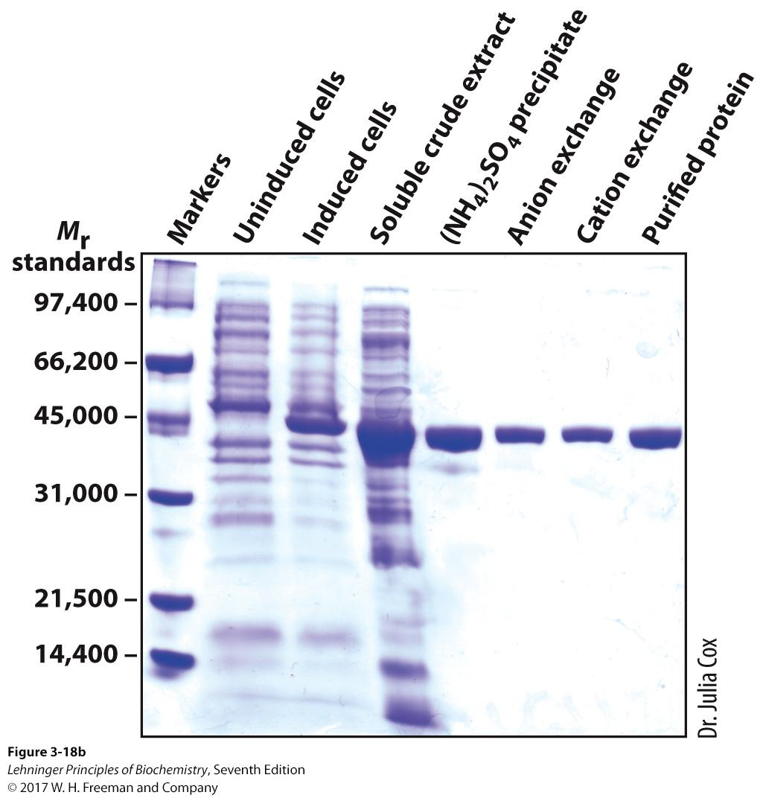
SDS-PAGE Pode Ser Usada para Calcular a Massa Molecular de uma Proteína
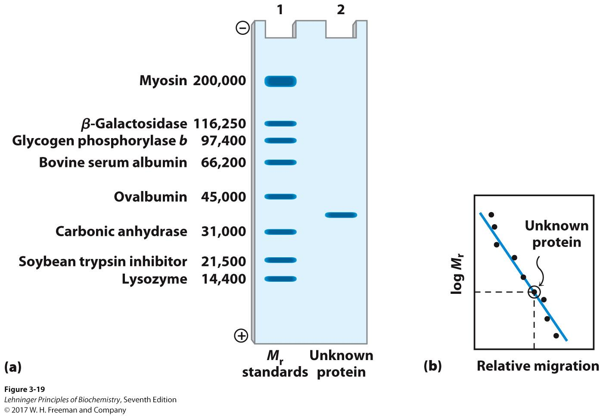
Focalização Isoelétrica Pode Ser Usada para Determinar o pI de uma Proteína
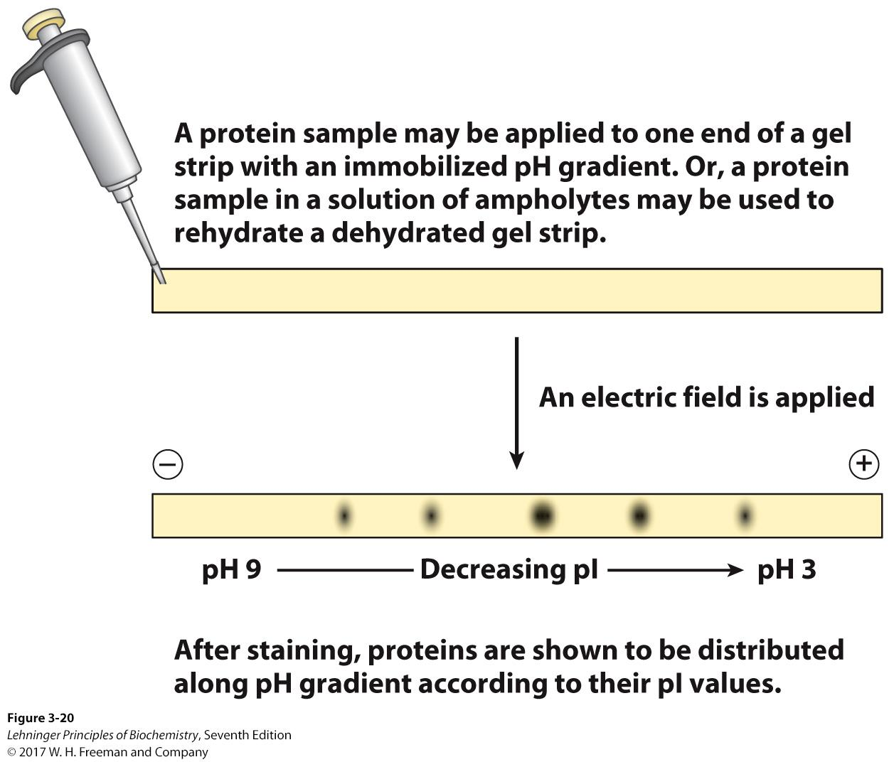
Focalização Isoelétrica e SDS-PAGE São Combinadas na Eletroforese 2D
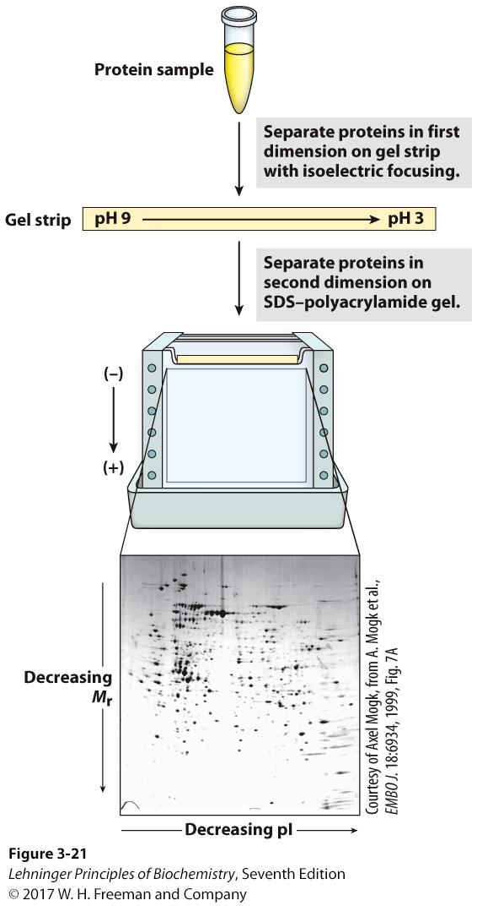
Aminoácidos Aromáticos Absorvem Luz de Maneira Dependente da Concentração
- Os aminoácidos aromáticos absorvem luz na região UV.
- As proteínas tipicamente têm máximos de absorbância UV em torno de 275–280 nm.
- Triptofano e tirosina são os cromóforos mais fortes.
- Para proteínas e peptídeos com coeficientes de extinção (ou sequências) conhecidos, a concentração pode ser determinada por espectrofotometria UV-visível usando a lei de Lambert-Beer: A = εcl
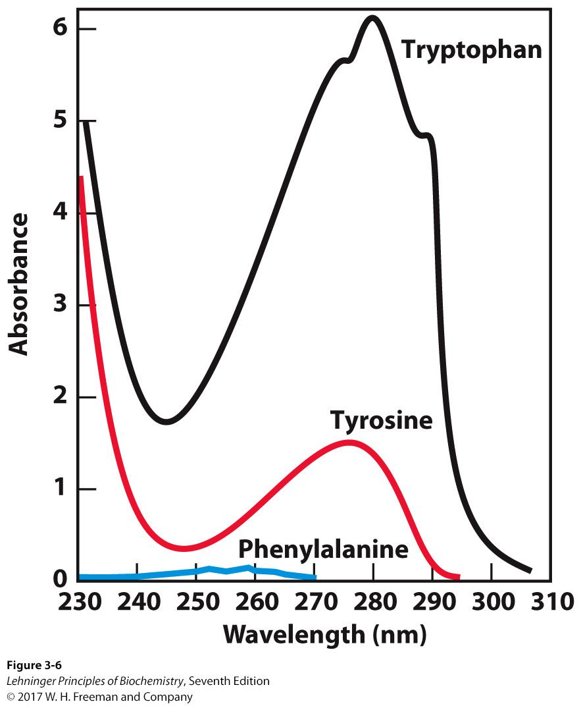
Atividade Específica Descreve a Pureza da Proteína de Interesse
- Proteínas em uma mistura complexa frequentemente requerem mais de uma purificação para isolar completamente a proteína de interesse.
- Durante a purificação, a determinação da localização da proteína de interesse pode ser realizada acompanhando seu comportamento.
- Se uma proteína tem uma função específica (ex.: ligar insulina), a fração que melhor liga insulina após cada etapa de purificação conterá a maior parte da proteína de interesse.
- A função da proteína é chamada de “atividade”.
- A razão entre a atividade e a concentração total de proteína é chamada de “atividade específica”.
Atividade Específica Descreve a Pureza da Proteína de Interesse
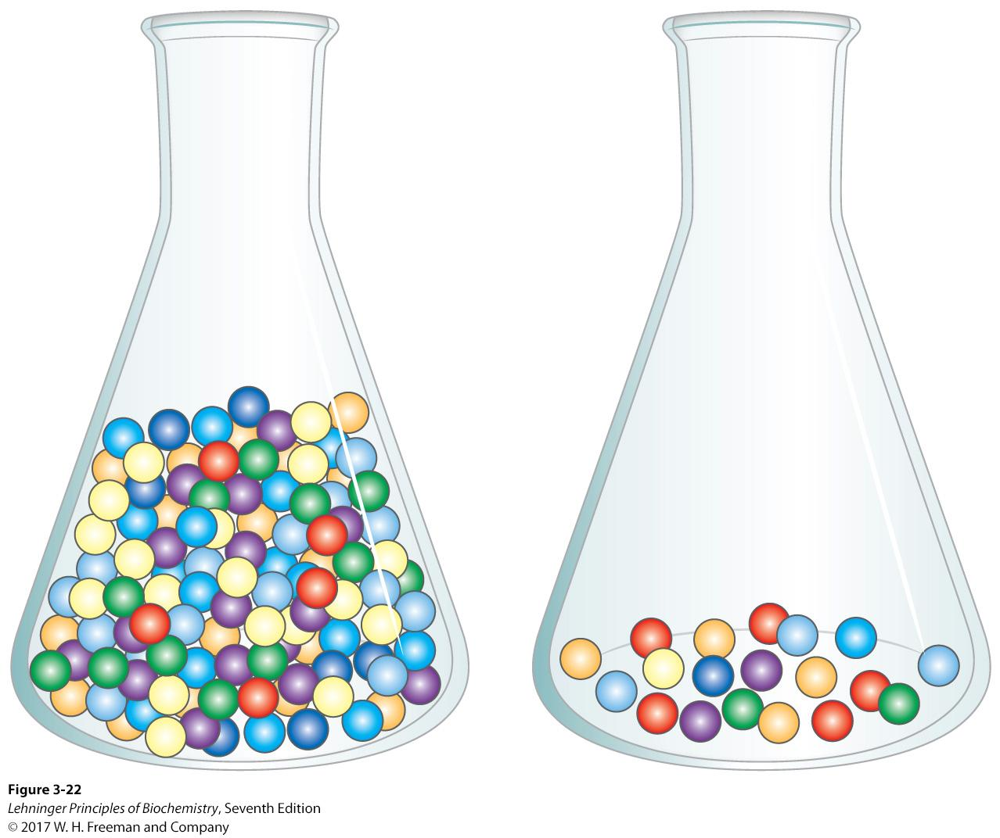
Sequenciamento de Proteínas
- É essencial para análises bioquímicas posteriores que conheçamos a sequência da proteína que estamos estudando.
- A sequência real é geralmente determinada a partir da sequência de DNA.
- Degradação de Edman (método clássico):
- rodadas sucessivas de modificação N-terminal, clivagem e identificação
- pode ser usada para identificar proteína com sequência conhecida
- Espectrometria de massas (método moderno):
- MALDI-MS e ESI-MS podem identificar com precisão a massa de um peptídeo e, assim, a sequência de aminoácidos
- pode ser usada para determinar modificações pós-traducionais
Degradação de Edman para Sequenciamento de Proteínas
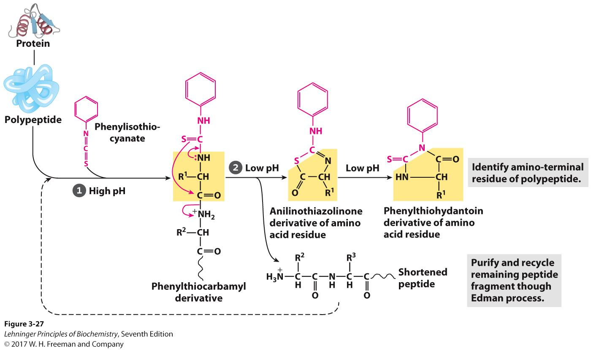
MALDI-MS para Sequenciamento de Proteínas


Sequências de Proteínas como Pistas para Relações Evolutivas
- Sequências de proteínas com funções idênticas de uma ampla gama de espécies podem ser alinhadas e analisadas quanto às diferenças.
- As diferenças indicam divergências evolutivas.
- A análise de múltiplas famílias de proteínas pode indicar relações evolutivas entre organismos e, em última instância, a história da vida na Terra.
Capítulo 3: Resumo
Neste capítulo, aprendemos sobre:
- muitas funções biológicas de peptídeos e proteínas
- estruturas e nomes de aminoácidos encontrados nas proteínas
- propriedades de ionização de aminoácidos e peptídeos
- métodos para separação e análise de proteínas